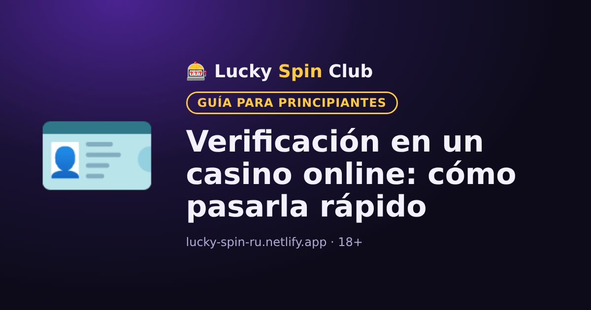

Verificación en un casino online: cómo pasarla rápido

Actualizado: 6 de noviembre de 2026
La verificación es la comprobación de la identidad del jugador. Sin ella, el casino normalmente no paga las ganancias. Conviene hacerla con antelación.
Para qué sirve
Los casinos con licencia deben comprobar la edad de los jugadores (solo mayores de 18), prevenir el fraude y el lavado de dinero. Por eso es un procedimiento estándar, no desconfianza hacia ti.
Qué documentos pueden pedir
- Documento de identidad o pasaporte con foto.
- Comprobante de domicilio, por ejemplo una factura de servicios o un extracto bancario.
- Comprobante del método de pago, por ejemplo una foto de la tarjeta en la que solo se vean los primeros y los últimos dígitos.
- A veces, una selfie con el documento.
Cómo pasarla más rápido
- Al registrarte, usa tus datos reales, exactamente como en el documento.
- Haz fotos nítidas con buena luz, sin reflejos ni bordes cortados.
- Sube los documentos desde tu cuenta en el sitio oficial del casino.
Por qué pueden rechazarla
- Los datos del perfil no coinciden con el documento.
- La foto no se lee o el documento está vencido.
- Una misma persona tiene varias cuentas.
Envía los documentos solo a través del sitio del casino, nunca a desconocidos por mensajería.
¿Quieres probar? El registro toma alrededor de un minuto.
🎁 Registrarse y obtener el bonoPreguntas frecuentes
¿Qué documentos piden para la verificación?
Normalmente un documento con foto (por ejemplo, el de identidad) y a veces un comprobante de domicilio y del método de pago.
¿Cuánto tarda la verificación?
Depende del casino. Las fotos nítidas y los datos correctos en el perfil ayudan a pasarla más rápido.
¿Es seguro enviar los documentos?
Envíalos solo desde tu cuenta en el sitio oficial del casino y nunca a desconocidos por mensajería.